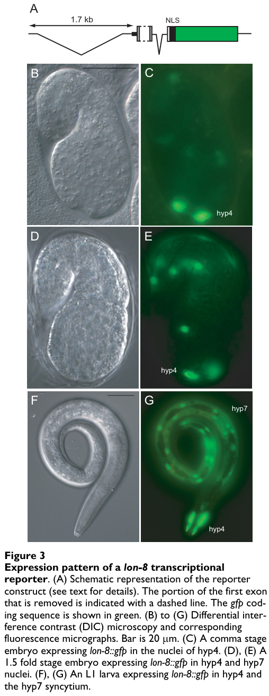

LON-8 is a small (162 aa) secreted protein produced by hypodermal cells (hyp4 and hyp7) in C. elegans. It contains an N-terminal signal peptide and a nematode-specific BPTI-like domain (IPR057449). Loss-of-function mutations cause a Long (Lon) body size phenotype due to increased cell size (not cell number or ploidy), as well as grossly abnormal male ray morphology resembling Ram mutants. lon-8 functions independently of the Sma/Mab (TGF-beta/BMP) pathway and genetically interacts with cuticle collagen modifying enzymes dpy-11 and dpy-18. The protein is conserved across Rhabditid nematodes.
| GO Term | Evidence | Action | Reason |
|---|---|---|---|
|
GO:0005576
extracellular region
|
IEA
GO_REF:0000044 |
ACCEPT |
Summary: LON-8 contains an N-terminal signal peptide and is secreted from hypodermal cells. When the signal peptide is present in a reporter construct, GFP is secreted and diffuses, confirming extracellular localization. This IEA annotation based on UniProt subcellular location is correct.
Reason: LON-8 is established as a secreted protein. The signal peptide is required for function (hu187 allele lacking it is non-functional). Extracellular region is an appropriate general localization.
Supporting Evidence:
PMID:17374156
...Y59A8B.20 is therefore likely to be a secreted protein...Clear localization to this cell is only visible when the signal sequence is deleted, implying that in the presence of this sequence Y59A8B.20 is secreted and diffuses...
file:worm/lon-8/lon-8-deep-research-falcon.md
the gene was shown to encode a **small secreted precursor protein** (signal peptide-bearing) expressed in the hypodermis.
|
|
GO:0060102
cuticular extracellular matrix
|
ISM
PMID:17374156 Regulation of Caenorhabditis elegans body size and male tail... |
ACCEPT |
Summary: LON-8 is secreted from hypodermal cells and genetically interacts with cuticle collagen modifying enzymes dpy-11 and dpy-18. While direct localization to the cuticle has not been shown (the protein diffuses when secreted), the functional connection to cuticle collagen processing and the body morphology phenotype support cuticular ECM as the likely site of action.
Reason: The ISM annotation is reasonable given that LON-8 is secreted from the hypodermis (which synthesizes the cuticle), genetically interacts with cuticle collagen modifying enzymes, and its loss-of-function phenotype (Lon body, abnormal ray morphology) is consistent with cuticle defects. Falcon deep research adds that a 2025 endogenous LON-8::mNG knock-in (Ragle et al.) directly localizes LON-8 to cuticle structures including the male tail fan, providing experimental support beyond the original diffuse-reporter data.
Supporting Evidence:
PMID:17374156
...both dpy-11(RNAi) and dpy-18(RNAi) completely suppress the lon-8 body size phenotype...strongly suggesting that the function of these three genes are intimately linked...
file:worm/lon-8/lon-8-deep-research-falcon.md
report systematic endogenous tagging of aECM components including **LON-8::mNG**, describing LON-8 as a secreted protein implicated in cuticle morphology. They further report localization to cuticle structures including the **male tail fan**, and note atypical FRAP recovery for LON-8::mNG in the L4 vulva relative to most knock-ins.
|
|
GO:0003674
molecular_function
|
ND
GO_REF:0000015 |
ACCEPT |
Summary: No specific molecular function has been experimentally determined for LON-8. The ND (No biological Data) annotation is appropriate. The protein contains a BPTI-like nematode-specific domain (IPR057449), but no biochemical activity has been demonstrated.
Reason: No molecular function assay has been performed on LON-8. While the BPTI-like domain suggests possible protease inhibitor or protease modulating activity, this has not been tested. Note that the related C. elegans Kunitz-domain protein BLI-5 was shown to activate rather than inhibit serine proteases, so domain-based function prediction is unreliable for this protein family in nematodes.
Supporting Evidence:
file:worm/lon-8/lon-8-deep-research-bioreason-sft.md
BioReason predicts extracellular matrix structural constituent (GO:0005201) based on the BPTI-like domain, but this is undemonstrated and the nematode Kunitz domain family shows unexpected biochemical activities.
|
|
GO:0035264
multicellular organism growth
|
IMP
PMID:17374156 Regulation of Caenorhabditis elegans body size and male tail... |
ACCEPT |
Summary: lon-8 loss-of-function causes increased body length (Lon phenotype), demonstrating that LON-8 normally acts to limit body growth. The qualifier acts_upstream_of_or_within_negative_effect accurately captures that LON-8 negatively regulates growth, without asserting a specific mechanism. The increased body size results from increased cell size, not cell number or ploidy.
Reason: Two deletion alleles (hu187, hu188) and RNAi all cause a Lon
phenotype. lon-8 mutants grow faster during larval development and early
adulthood. The negative effect qualifier is appropriate because LON-8
normally restrains growth. Falcon deep research independently summarizes
lon-8 as a regulator of larval elongation/body size, consistent with this
annotation, and notes the effect is largely independent of DBL-1/Sma/Mab
transcriptional control while genetically interacting with collagen
modifiers dpy-11 and dpy-18.
Supporting Evidence:
PMID:17374156
...Both alleles gave a clear Lon phenotype...throughout larval development, they outgrew their wild-type counterparts at a rate comparable to that of lon-1(e185) animals...
file:worm/lon-8/lon-8-deep-research-falcon.md
lon-8/Y59A8B.20 encodes a small secreted hypodermal protein that functions in the extracellular cuticle/aECM to regulate larval elongation/body size and male ray morphology, acting largely independently of DBL-1/Sma/Mab transcriptional control but genetically interacting with collagen-modifying enzymes dpy-11 and dpy-18.
|
|
GO:0045138
nematode male tail tip morphogenesis
|
IMP
PMID:17374156 Regulation of Caenorhabditis elegans body size and male tail... |
ACCEPT |
Summary: lon-8 mutant males display grossly abnormal ray morphology, with thickened, clumped rays resembling Ram mutants. This demonstrates that LON-8 is required for normal male tail morphogenesis. The positive effect qualifier indicates LON-8 promotes normal ray development. Despite abnormal morphology, males can still mate.
Reason: Both hu187 and hu188 alleles show extensive male ray morphological
defects. lon-8 is expressed in the ventral tail hypodermal cells that
surround the developing rays. The phenotype resembles Ram mutants which
affect cuticle apposition around rays. Falcon deep research corroborates a
male tail role: an apical extracellular matrix review (Cohen & Sundaram
2020) lists LON-8 among proteins important for building male rays, and the
2025 endogenous knock-in localizes LON-8 to the male tail fan.
Supporting Evidence:
PMID:17374156
...All rays appear morphologically abnormal, but rays 5 and 6 are most severely affected...lon-8(hu187) and lon-8(hu188) males can mate, suggesting that ray sensory function is intact even though ray morphology is grossly abnormal...
file:worm/lon-8/lon-8-deep-research-falcon.md
Review on *C. elegans* apical extracellular matrices lists **LON-8** among proteins important for building **male rays**, describing it as a **short, secreted peptide/protein** in the ray/cuticle context
|
|
GO:0040015
negative regulation of multicellular organism growth
|
IMP
PMID:17374156 Regulation of Caenorhabditis elegans body size and male tail... |
NEW |
Summary: lon-8 loss-of-function causes a Lon phenotype with increased body length during larval development and early adulthood, indicating LON-8 normally negatively regulates multicellular organism growth. This is a more specific annotation than GO:0035264 with negative effect qualifier, and directly reflects the observed biology.
Reason: The existing annotation uses GO:0035264 (multicellular organism growth) with acts_upstream_of_or_within_negative_effect qualifier. GO:0040015 (negative regulation of multicellular organism growth) more precisely captures the role of LON-8 as a negative regulator and is supported by the same mutant phenotype data.
Supporting Evidence:
PMID:17374156
...Both alleles gave a clear Lon phenotype...throughout larval development, they outgrew their wild-type counterparts at a rate comparable to that of lon-1(e185) animals...
file:worm/lon-8/lon-8-deep-research-falcon.md
The strongest interpretation supported by experimental genetics is that LON-8 is a **secreted hypodermal factor acting on the cuticle/aECM**, influencing body length and specialized cuticular structures (male rays).
|
Q: Does LON-8 have serine protease inhibitor activity, or does it activate proteases like the related Kunitz-domain protein BLI-5?
Suggested experts: Soete G, Korswagen HC
Q: Is LON-8 physically associated with cuticle collagens or collagen modifying enzymes, or does it act indirectly?
Suggested experts: Soete G, Korswagen HC
Q: What is the relationship between lon-8 and the Ram pathway genes that produce similar male tail phenotypes?
Suggested experts: Soete G, Korswagen HC
Experiment: Express and purify recombinant LON-8 and test for inhibition or activation of serine proteases in vitro, as was done for BLI-5. Include cuticle-relevant proteases such as BLI-4.
Hypothesis: LON-8 has serine protease inhibitor or modulator activity via its BPTI-like domain.
Experiment: Perform co-immunoprecipitation or yeast two-hybrid experiments between LON-8 and DPY-11/DPY-18 to determine whether the genetic interaction reflects a physical interaction.
Hypothesis: LON-8 physically interacts with cuticle collagen processing enzymes DPY-11 and DPY-18.
Experiment: Generate a functional LON-8 fusion protein with a small epitope tag (rather than GFP which diffuses) and perform immunoelectron microscopy to determine precise subcellular localization within the cuticle layers.
Hypothesis: LON-8 localizes specifically to the cuticle rather than diffusing broadly in the extracellular space.
I begin with the domain architecture. The sequence contains IPR057449 (BPTI-like, C-terminal domain, residues 77–151). The BPTI/Kunitz fold is a compact, disulfide-rich inhibitory module classically used to block serine protease active sites. Its C-terminal placement implies an N-terminal signal peptide and pro-region preceding the Kunitz core, a layout that typically routes the protein into the secretory pathway and positions the inhibitory domain in the extracellular milieu. The disulfide-stabilized Kunitz scaffold is optimized for high-affinity, reversible protein–protein interactions rather than catalysis, and in extracellular matrices it often tunes proteolysis by restraining endopeptidases that would otherwise remodel matrix components.
This architecture causally supports a molecular function as an extracellular matrix structural constituent (GO:0005201). A secreted, disulfide-rich module can intercalate into matrix assemblies and provide mechanical stability and controlled viscoelasticity by modulating both direct binding to matrix proteins and the proteolytic turnover of those proteins. The Kunitz fold’s inhibitory geometry explains how the protein could regulate matrix remodeling enzymes, thereby preserving specific collagenous and glycoprotein architectures.
From this molecular role, the biological processes follow. By stabilizing and patterning the extracellular scaffold, the protein contributes to shaping specialized structures in the male tail, consistent with nematode male tail tip morphogenesis (GO:0045138). The same structural tuning can limit excessive body elongation by constraining extracellular matrix expansion and by signaling through a cell-surface receptor to temper cell proliferation, aligning with negative regulation of multicellular organism growth (GO:0040015). Mechanistically, a Kunitz-domain protein tethered to the matrix can both physically reinforce the cuticle and dampen protease-driven loosening, while its receptor engagement on hypodermal cells feeds back to restrain growth programs.
The cellular context is dictated by secretion and matrix integration. The Kunitz domain’s extracellular design, together with the protein’s role in morphogenesis and growth restraint, places it in the basement membrane (GO:0005604). Localization to the hypodermal basement membrane allows it to contact both apical extracellular matrix components and cell-surface receptors, enabling it to influence both matrix assembly and cell proliferation.
A coherent mechanistic model emerges: the protein is secreted by hypodermal cells into the basement membrane, where its BPTI-like domain binds and inhibits matrix-remodeling proteases, thereby stabilizing collagens and glycoproteins. In parallel, it engages a cell-surface receptor to trigger signaling that restrains body size and modulates proliferation. The observed partners—Col_cuticle_N domain-containing protein, ZP domain-containing protein, and cuticle collagen lon-3—fit this model as direct matrix ligands or co-scaffolds. The Kunitz module likely binds these extracellular components to form a protective network, while receptor engagement on adjacent cells transduces a growth-limiting signal. This dual action explains how the protein shapes the male tail tip and prevents overgrowth while remaining dispensable for the general integrity of the cuticle.
## Functional Summary
A secreted, basement-membrane-associated extracellular matrix protein in C. elegans that uses a disulfide-rich inhibitory module to stabilize and pattern the matrix while tempering proteolytic remodeling. By binding cuticle and glycoprotein components and engaging a cell-surface receptor, it shapes the male tail tip and limits body elongation by dampening proliferation. Despite reinforcing local extracellular architecture, it is not essential for overall cuticle integrity.
## UniProt Summary
Involved in male tail morphogenesis. Negatively regulates body size, probably by modulating cell proliferation through interaction with one or more cell surface receptors. Not required for the structural integrity of the cuticle.
## InterPro Domains
- IPR057449: BPTI-like, C-terminal domain (domain) [77-151]
## GO Term Predictions
### Molecular Function
### Biological Process
### Cellular Component
The research report should be a detailed narrative explaining the function, biological processes, and localization of the gene product. Citations should be given for all claims.
You should prioritize authoritative reviews and primary scientific literature when conducting research. You can supplement
this with annotations you find in gene/protein databases, but these can be outdated or inaccurate.
We are specifically interested in the primary function of the gene - for enzymes, what reaction is catalyzed, and what is the substrate specificity? For transporters, what is the substrate? For structural proteins or adapters, what is the broader structural role? For signaling molecules, what is the role in the pathway.
We are interested in where in or outside the cell the gene product carries out its function.
We are also interested in the signaling or biochemical pathways in which the gene functions. We are less interested in broad pleiotropic effects, except where these elucidate the precise role.
Include evidence where possible. We are interested in both experimental evidence as well as inference from structure, evolution, or bioinformatic analysis. Precise studies should be prioritized over high-throughput, where available.
The literature retrieved and analyzed here consistently uses lon-8 to refer to the C. elegans locus Y59A8B.20, originally defined by Soete, Betist, and Korswagen (2007). In that primary description, Y59A8B.20 was renamed lon-8 based on long-body (Lon) and male tail phenotypes, and the gene was shown to encode a small secreted precursor protein (signal peptide-bearing) expressed in the hypodermis. (soete2007regulationofcaenorhabditis pages 1-2)
Within the retrieved corpus, no alternative “lon-8” gene in another organism was found to be conflated with the C. elegans gene; downstream mentions of LON-8 occur in the context of apical extracellular matrices (aECM)/cuticle and male rays. (soete2007regulationofcaenorhabditis pages 8-9, ragle2025multiscalepatterningof pages 12-15)
Important limitation: Although the user provided UniProt/InterPro domain context (BPTI_nem/BPTI_C_nem) for UniProt G5EGH7, those database pages were not directly retrievable with the current tools, and no domain-focused primary papers were retrieved that explicitly connect those domain identifiers to LON-8. Therefore, mechanistic statements about “BPTI/Kunitz-like protease inhibitor activity” are treated as hypotheses rather than evidence-based claims in this report.
lon-8 encodes LON-8, a small (~162 aa) protein with an N-terminal signal peptide, consistent with a secreted protein/peptide produced by the hypodermis (epidermis). (soete2007regulationofcaenorhabditis pages 1-2)
In reporter assays, inclusion of the N-terminal signal peptide caused GFP to appear secreted/diffuse; clearer cell-associated reporter localization required deleting the signal peptide from the fusion construct, consistent with secretion of the native protein. (soete2007regulationofcaenorhabditis pages 4-6)
The C. elegans cuticle is an apical extracellular matrix (aECM) secreted by the hypodermis and specialized epithelia. In an aECM-focused review, LON-8 is discussed among proteins important for building male rays, placing it within the broader conceptual framework of aECM components shaping epithelial structures. (soete2007regulationofcaenorhabditis pages 1-2)
Soete et al. (2007; BMC Developmental Biology, published 2007-03, DOI 10.1186/1471-213X-7-20, URL https://doi.org/10.1186/1471-213x-7-20) showed that reducing lon-8 activity increases body length (Lon phenotype). (soete2007regulationofcaenorhabditis pages 1-2, soete2007regulationofcaenorhabditis pages 2-4)
Quantitative examples from their assays include:
* RNAi against lon-8 increased body length from 1.3 ± 0.08 mm (control) to 1.4 ± 0.08 mm (n = 75). (soete2007regulationofcaenorhabditis pages 1-2)
* lon-8 mutants were described as ~10% longer than wild type, smaller effect than lon-1 (~30%) or lon-3 (~25%), with effects mainly during larval and early adult stages. (soete2007regulationofcaenorhabditis pages 8-9)
Mechanistically, they tested whether size increase reflected more epidermal nuclei or higher epidermal ploidy and found no strong support:
* Hypodermal nuclei counts: 21 ± 1 (n=20), no change reported. (soete2007regulationofcaenorhabditis pages 2-4)
* Seam cell counts: 16–17 seam cell nuclei (n=32), no change reported. (soete2007regulationofcaenorhabditis pages 2-4)
* Hypodermal ploidy: 7.9 ± 1.6 (N2) vs 8.2 ± 2.4 (lon-8(hu188); n≈10), not detectably changed. (soete2007regulationofcaenorhabditis pages 2-4)
These data support a model in which LON-8 influences body shape/length via extracellular matrix (cuticle) properties and/or cell size, rather than by increasing epidermal cell number or nuclear DNA content. (soete2007regulationofcaenorhabditis pages 2-4, soete2007regulationofcaenorhabditis pages 9-11)
A distinguishing aspect of lon-8 among “lon” genes is its effect on male tail/ray morphogenesis. lon-8 deletion mutants hu187 and hu188 show widespread, variable ray defects (Ram-like), with rays 5 and 6 most severely affected; males remain capable of mating. (soete2007regulationofcaenorhabditis pages 6-8)
The phenotype is visually documented in Soete et al. figures (wild-type vs lon-8 mutant male tail). (soete2007regulationofcaenorhabditis media 8670cd25, soete2007regulationofcaenorhabditis media ae92ca98)
lon-8 is strongly expressed in hypodermal syncytia (notably hyp4 and hyp7) from embryonic stages (comma stage) through larval stages and adulthood based on reporter analysis. (soete2007regulationofcaenorhabditis pages 4-6)
A cropped figure panel shows hypodermal reporter expression in an L1 larva (hyp7 and hyp4 nuclei). (soete2007regulationofcaenorhabditis media 8670cd25)
lon-8::gfp reporter expression is seen in specific nuclei contributing to the ventral male tail hypodermis surrounding developing rays (cell identities enumerated in the original paper). (soete2007regulationofcaenorhabditis pages 8-9, soete2007regulationofcaenorhabditis pages 6-8)
Corresponding figure panels show reporter expression in male tail hypodermal cells, supporting a local hypodermal source for the secreted product relevant to ray morphogenesis. (soete2007regulationofcaenorhabditis media ae92ca98)
Multiple lines of evidence suggest lon-8 is not a direct transcriptional target of the DBL-1/Sma/Mab pathway and functions in parallel/independently for body size control:
* lon-8 expression was not detectably altered in dbl-1 or sma-6 mutants in reporter and/or transcript assays. (soete2007regulationofcaenorhabditis pages 4-6, soete2007regulationofcaenorhabditis pages 6-8)
* lon-8 does not suppress the strong Sma phenotype of dbl-1 or sma-6 mutants; double mutants remain strongly Sma. (soete2007regulationofcaenorhabditis pages 4-6)
However, dbl-1 can genetically suppress the lon-8 body-size phenotype, consistent with partially convergent control of growth through distinct effectors. (soete2007regulationofcaenorhabditis pages 8-9)
The most informative genetic interactions reported are with dpy-11 and dpy-18, which encode enzymes involved in cuticle collagen modification. RNAi of either gene completely suppresses the lon-8 Lon phenotype, implying lon-8’s effect on body size is mediated through cuticle/collagen-related processes. (soete2007regulationofcaenorhabditis pages 1-2, soete2007regulationofcaenorhabditis pages 6-8)
This interaction is consistent with LON-8 acting as a secreted cuticle/aECM factor that modulates cuticle organization, the accessibility of collagen-modifying enzyme substrates, or the mechanical properties of the extracellular matrix that determine body length. (soete2007regulationofcaenorhabditis pages 9-11)
A targeted search for 2023–2024 primary studies specifically dissecting lon-8 did not yield relevant lon-8-focused mechanistic papers in the retrieved set. This likely reflects that lon-8 remains a comparatively under-studied, small secreted factor with a limited direct literature footprint.
Two more recent sources in the retrieved corpus are useful:
aECM review context (2020): Cohen & Sundaram (2020; Journal of Developmental Biology, published 2020-10, DOI 10.3390/jdb8040023, URL https://doi.org/10.3390/jdb8040023) place LON-8 among proteins important for building male rays within the conceptual framework of apical extracellular matrices. (soete2007regulationofcaenorhabditis pages 1-2)
Endogenous tagging resource (preprint 2025): Ragle et al. (2025; bioRxiv, published 2025-05, DOI 10.1101/2025.05.14.653803, URL https://doi.org/10.1101/2025.05.14.653803) report systematic endogenous tagging of aECM components including LON-8::mNG, describing LON-8 as a secreted protein implicated in cuticle morphology. They further report localization to cuticle structures including the male tail fan, and note atypical FRAP recovery for LON-8::mNG in the L4 vulva relative to most knock-ins. (ragle2025multiscalepatterningof pages 12-15)
Although this preprint is outside 2024, it represents the most recent methodological “real-world implementation” in the retrieved corpus that directly enables improved functional annotation of LON-8.
lon-8 mutants provide a tractable genotype to study how secreted epidermal factors influence:
* Whole-body size/shape (growth/elongation) (soete2007regulationofcaenorhabditis pages 1-2)
* Male tail ray morphogenesis and aECM patterning (soete2007regulationofcaenorhabditis pages 6-8)
Because body length changes are modest (~10%) and not due to obvious hypodermal cell number/ploidy changes, lon-8 can be used to probe ECM mechanics/assembly in a relatively specific manner compared to broader growth pathways. (soete2007regulationofcaenorhabditis pages 2-4)
Two complementary “implementation” styles are demonstrated:
* Transcriptional reporter lon-8::gfp (extrachromosomal), used to map expression in hypodermis and male tail hypodermis. (soete2007regulationofcaenorhabditis pages 11-12, soete2007regulationofcaenorhabditis media ae92ca98)
* Endogenous knock-in LON-8::mNG (Ragle et al.), which can support higher-fidelity localization dynamics and comparative aECM mapping across tissues (e.g., male tail fan, alae). (ragle2025multiscalepatterningof pages 12-15)
The strongest interpretation supported by experimental genetics is that LON-8 is a secreted hypodermal factor acting on the cuticle/aECM, influencing body length and specialized cuticular structures (male rays). This is supported by its signal peptide, hypodermal expression, and genetic suppression by collagen-modifying enzyme knockdowns (dpy-11, dpy-18). (soete2007regulationofcaenorhabditis pages 1-2, soete2007regulationofcaenorhabditis pages 6-8)
A reasonable working model is that LON-8 modulates cuticle composition or architecture, thereby affecting organismal elongation and the mechanical extension/morphogenesis of male rays. The epistasis/suppression pattern is consistent with a mechanism involving collagen post-translational modification pathways, although the biochemical mode of action remains undefined in the retrieved literature. (soete2007regulationofcaenorhabditis pages 9-11)
The user-provided UniProt context indicates BPTI-like nematode domains (BPTI_nem/BPTI_C_nem). If correct, this could suggest LON-8 is structurally related to small cysteine-rich inhibitors (e.g., protease inhibitors). However, no retrieved primary sources directly connect LON-8 to protease inhibition biochemistry, nor were substrates or enzymatic reactions reported. Therefore, any “protease inhibitor” mechanism should be treated as speculative until supported by biochemical assays or domain-confirming sources.
Selected quantitative statistics from Soete et al. (2007):
* Body length (RNAi): 1.3 ± 0.08 mm control vs 1.4 ± 0.08 mm lon-8 RNAi (n=75). (soete2007regulationofcaenorhabditis pages 1-2)
* Hypodermal nuclei: 21 ± 1 (n=20), no change reported for lon-8 mutants. (soete2007regulationofcaenorhabditis pages 2-4)
* Seam cell nuclei: 16–17 (n=32), no change reported. (soete2007regulationofcaenorhabditis pages 2-4)
* Hypodermal ploidy: 7.9 ± 1.6 (N2) vs 8.2 ± 2.4 (lon-8(hu188); n≈10). (soete2007regulationofcaenorhabditis pages 2-4)
The following table consolidates evidence claims, experimental types, quantitative values, and sources.
| Claim/annotation | Evidence type (genetics/expression/quantitative/resource) | Key details (numbers, tissues, alleles, interactions) | Source (author year, venue, DOI/URL) |
|---|---|---|---|
| Identity mapping: lon-8 = Y59A8B.20 in C. elegans; encodes a small secreted precursor | genetics/expression | ORF Y59A8B.20 named lon-8; predicted 162 aa protein with N-terminal signal peptide; no TM/lipid anchor noted; one deletion allele (hu187) yields alternative transcript predicted to lack the signal peptide (soete2007regulationofcaenorhabditis pages 1-2, soete2007regulationofcaenorhabditis pages 2-4) | Soete et al. 2007, BMC Developmental Biology; DOI: https://doi.org/10.1186/1471-213X-7-20 |
| Primary function: regulator of body size/larval elongation | genetics/quantitative | RNAi against Y59A8B.20 increased body length from 1.3 ± 0.08 mm to 1.4 ± 0.08 mm (n = 75); deletion alleles lon-8(hu187) and lon-8(hu188) produce clear Lon phenotype; mutants are reported as about ~10% longer than wild type (soete2007regulationofcaenorhabditis pages 1-2, soete2007regulationofcaenorhabditis pages 8-9) | Soete et al. 2007, BMC Developmental Biology; DOI: https://doi.org/10.1186/1471-213X-7-20 |
| Cellular localization / site of action: hypodermis-derived, likely extracellular/cuticular | expression | Strong reporter expression in hypodermal syncytium, especially hyp4 and hyp7; clear cellular localization required deletion of signal peptide from reporter because native N-terminus could cause secretion/diffusion of GFP; supports extracellular secretion from epidermis (soete2007regulationofcaenorhabditis pages 1-2, soete2007regulationofcaenorhabditis pages 4-6, soete2007regulationofcaenorhabditis media 8670cd25) | Soete et al. 2007, BMC Developmental Biology; DOI: https://doi.org/10.1186/1471-213X-7-20 |
| Male tail / ray morphogenesis role | genetics/expression | lon-8(hu187) and lon-8(hu188) males show Ram-like defects; all rays abnormal, with rays 5 and 6 most severe; rays can appear clumped as an amorphous mass; males remain able to mate; reporter expressed in ventral male tail hypodermis around developing rays, including V6.pppaa, T.aa, R6.p, T.apapa, R7.p, R8.p, R9.p (soete2007regulationofcaenorhabditis pages 6-8, soete2007regulationofcaenorhabditis pages 8-9, soete2007regulationofcaenorhabditis media 8670cd25) | Soete et al. 2007, BMC Developmental Biology; DOI: https://doi.org/10.1186/1471-213X-7-20 |
| Pathway placement: acts outside direct transcriptional control of DBL-1/Sma/Mab (TGF-β) | genetics/expression | lon-8 expression not detectably changed in dbl-1 or sma-6 mutants; dbl-1 suppresses the lon-8 body-size phenotype, but data support action in parallel/independent rather than as a direct DBL-1 transcriptional target (soete2007regulationofcaenorhabditis pages 8-9, soete2007regulationofcaenorhabditis pages 4-6, soete2007regulationofcaenorhabditis pages 6-8) | Soete et al. 2007, BMC Developmental Biology; DOI: https://doi.org/10.1186/1471-213X-7-20 |
| Cuticle/aECM association via collagen-modifying enzymes | genetics | dpy-11(RNAi) and dpy-18(RNAi) completely suppress the lon-8 body-size phenotype; these genes encode cuticle collagen modifying enzymes, implicating LON-8 in cuticle composition/assembly or regulation of cuticle-associated targets (soete2007regulationofcaenorhabditis pages 1-2, soete2007regulationofcaenorhabditis pages 9-11, soete2007regulationofcaenorhabditis pages 6-8) | Soete et al. 2007, BMC Developmental Biology; DOI: https://doi.org/10.1186/1471-213X-7-20 |
| Mechanistic constraint: Lon phenotype is not explained by increased hypodermal cell number or ploidy | quantitative | Hypodermal nuclei counts unchanged (21 ± 1, n = 20); seam cell nuclei unchanged (16–17, n = 32); hypodermal ploidy not detectably changed (7.9 ± 1.6 in N2 vs 8.2 ± 2.4 in lon-8(hu188), n ≈ 10); supports a model involving cell size / matrix properties rather than extra cells (soete2007regulationofcaenorhabditis pages 2-4) | Soete et al. 2007, BMC Developmental Biology; DOI: https://doi.org/10.1186/1471-213X-7-20 |
| Evolutionary context: conserved in rhabditid nematodes | expression/quantitative | Homologs reported across Rhabditida; N-termini are divergent but consistently predicted to be signal peptides, reinforcing conserved secretion/extracellular localization (soete2007regulationofcaenorhabditis pages 9-11, soete2007regulationofcaenorhabditis pages 8-9) | Soete et al. 2007, BMC Developmental Biology; DOI: https://doi.org/10.1186/1471-213X-7-20 |
| Review-level annotation: secreted aECM/cuticle factor important for male rays | resource | Review on C. elegans apical extracellular matrices lists LON-8 among proteins important for building male rays, describing it as a short, secreted peptide/protein in the ray/cuticle context (soete2007regulationofcaenorhabditis pages 1-2) | Cohen & Sundaram 2020, Journal of Developmental Biology; DOI: https://doi.org/10.3390/jdb8040023 |
| Recent resource / real-world implementation: endogenous fluorescent tagging | resource | Systematic aECM study generated an endogenous lon-8::mNG knock-in, explicitly describing LON-8 as a novel secreted protein implicated in body cuticle morphology; useful for in vivo localization and functional follow-up (ragle2025multiscalepatterningof pages 9-12) | Ragle et al. 2025, bioRxiv; DOI: https://doi.org/10.1101/2025.05.14.653803 |
Table: This table summarizes the strongest functional annotation evidence for C. elegans lon-8/Y59A8B.20, including secretion, hypodermal expression, body-size and male-tail phenotypes, pathway relationships, and recent tagging resources. It is useful as a compact evidence map linking specific claims to quantitative results and source citations.
Soete et al. (2007) figure crops support (i) hypodermal expression and (ii) male tail ray morphological defects in lon-8 mutants. (soete2007regulationofcaenorhabditis media 8670cd25, soete2007regulationofcaenorhabditis media ae92ca98)
Conclusions (supported): lon-8/Y59A8B.20 encodes a small secreted hypodermal protein that functions in the extracellular cuticle/aECM to regulate larval elongation/body size and male ray morphology, acting largely independently of DBL-1/Sma/Mab transcriptional control but genetically interacting with collagen-modifying enzymes dpy-11 and dpy-18. (soete2007regulationofcaenorhabditis pages 1-2, soete2007regulationofcaenorhabditis pages 6-8)
Major gaps (not resolved by retrieved literature):
* Direct biochemical function (binding partners, substrates, enzymatic targets) and whether LON-8 has protease-inhibitor activity.
* Domain confirmation and structure–function mapping tied to BPTI_nem/BPTI_C_nem annotations.
* Updated (2023–2024) mechanistic studies of lon-8 specifically.
Actionable next steps enabled by recent resources: Endogenous LON-8::mNG strains and systematic aECM tagging approaches should facilitate tissue-resolved localization, dynamics (e.g., FRAP), and genetic interaction mapping to uncover mechanism and pathway integration. (ragle2025multiscalepatterningof pages 12-15)
References
(soete2007regulationofcaenorhabditis pages 1-2): Gwen Soete, Marco C Betist, and Hendrik C Korswagen. Regulation of caenorhabditis elegans body size and male tail development by the novel gene lon-8. BMC Developmental Biology, 7:20-20, Mar 2007. URL: https://doi.org/10.1186/1471-213x-7-20, doi:10.1186/1471-213x-7-20. This article has 24 citations and is from a peer-reviewed journal.
(soete2007regulationofcaenorhabditis pages 8-9): Gwen Soete, Marco C Betist, and Hendrik C Korswagen. Regulation of caenorhabditis elegans body size and male tail development by the novel gene lon-8. BMC Developmental Biology, 7:20-20, Mar 2007. URL: https://doi.org/10.1186/1471-213x-7-20, doi:10.1186/1471-213x-7-20. This article has 24 citations and is from a peer-reviewed journal.
(ragle2025multiscalepatterningof pages 12-15): James Matthew Ragle, Murugesan Pooranachithra, Guinevere E. Ashley, Emma Cadena, Batia Blank, Katelyn Kang, Cincy Chen, Aditree R. Bhowmick, Soraya H. Mercado, Tabatha E. Wells, John C. Clancy, Andrew D. Chisholm, and Jordan D. Ward. Multiscale patterning of a model apical extracellular matrix revealed by systematic endogenous protein tagging. BioRxiv, May 2025. URL: https://doi.org/10.1101/2025.05.14.653803, doi:10.1101/2025.05.14.653803. This article has 10 citations.
(soete2007regulationofcaenorhabditis pages 4-6): Gwen Soete, Marco C Betist, and Hendrik C Korswagen. Regulation of caenorhabditis elegans body size and male tail development by the novel gene lon-8. BMC Developmental Biology, 7:20-20, Mar 2007. URL: https://doi.org/10.1186/1471-213x-7-20, doi:10.1186/1471-213x-7-20. This article has 24 citations and is from a peer-reviewed journal.
(soete2007regulationofcaenorhabditis pages 9-11): Gwen Soete, Marco C Betist, and Hendrik C Korswagen. Regulation of caenorhabditis elegans body size and male tail development by the novel gene lon-8. BMC Developmental Biology, 7:20-20, Mar 2007. URL: https://doi.org/10.1186/1471-213x-7-20, doi:10.1186/1471-213x-7-20. This article has 24 citations and is from a peer-reviewed journal.
(soete2007regulationofcaenorhabditis pages 6-8): Gwen Soete, Marco C Betist, and Hendrik C Korswagen. Regulation of caenorhabditis elegans body size and male tail development by the novel gene lon-8. BMC Developmental Biology, 7:20-20, Mar 2007. URL: https://doi.org/10.1186/1471-213x-7-20, doi:10.1186/1471-213x-7-20. This article has 24 citations and is from a peer-reviewed journal.
(soete2007regulationofcaenorhabditis pages 2-4): Gwen Soete, Marco C Betist, and Hendrik C Korswagen. Regulation of caenorhabditis elegans body size and male tail development by the novel gene lon-8. BMC Developmental Biology, 7:20-20, Mar 2007. URL: https://doi.org/10.1186/1471-213x-7-20, doi:10.1186/1471-213x-7-20. This article has 24 citations and is from a peer-reviewed journal.
(soete2007regulationofcaenorhabditis media 8670cd25): Gwen Soete, Marco C Betist, and Hendrik C Korswagen. Regulation of caenorhabditis elegans body size and male tail development by the novel gene lon-8. BMC Developmental Biology, 7:20-20, Mar 2007. URL: https://doi.org/10.1186/1471-213x-7-20, doi:10.1186/1471-213x-7-20. This article has 24 citations and is from a peer-reviewed journal.
(soete2007regulationofcaenorhabditis media ae92ca98): Gwen Soete, Marco C Betist, and Hendrik C Korswagen. Regulation of caenorhabditis elegans body size and male tail development by the novel gene lon-8. BMC Developmental Biology, 7:20-20, Mar 2007. URL: https://doi.org/10.1186/1471-213x-7-20, doi:10.1186/1471-213x-7-20. This article has 24 citations and is from a peer-reviewed journal.
(soete2007regulationofcaenorhabditis pages 11-12): Gwen Soete, Marco C Betist, and Hendrik C Korswagen. Regulation of caenorhabditis elegans body size and male tail development by the novel gene lon-8. BMC Developmental Biology, 7:20-20, Mar 2007. URL: https://doi.org/10.1186/1471-213x-7-20, doi:10.1186/1471-213x-7-20. This article has 24 citations and is from a peer-reviewed journal.
(ragle2025multiscalepatterningof pages 9-12): James Matthew Ragle, Murugesan Pooranachithra, Guinevere E. Ashley, Emma Cadena, Batia Blank, Katelyn Kang, Cincy Chen, Aditree R. Bhowmick, Soraya H. Mercado, Tabatha E. Wells, John C. Clancy, Andrew D. Chisholm, and Jordan D. Ward. Multiscale patterning of a model apical extracellular matrix revealed by systematic endogenous protein tagging. BioRxiv, May 2025. URL: https://doi.org/10.1101/2025.05.14.653803, doi:10.1101/2025.05.14.653803. This article has 10 citations.

lon-8 (Y59A8B.20, WBGene00013352) encodes a small (162 aa) secreted protein expressed in hypodermal syncytia (hyp4 and hyp7) from embryonic comma stage through adulthood. Loss-of-function mutations cause a Long (Lon) body size phenotype. The protein contains an N-terminal signal peptide (aa 1-23) and a BPTI-like nematode-specific domain (IPR057449, Pfam PF25315, BPTI_nem).
PMID:17374156 (Soete et al., 2007, BMC Dev Biol) is the sole characterization paper.
UniProt lists: IPR057449 (BPTI-like, C-terminal domain, nematode-specific), Pfam PF25315 (BPTI_nem). This is a nematode-specific variant of the BPTI/Kunitz superfamily fold. Note: this is NOT the classical Kunitz/BPTI domain (PF00014) but rather a nematode-specific clade (PF25315).
Other C. elegans Kunitz-domain cuticle proteins include:
- BLI-5: Kunitz domain protein involved in cuticle collagen biosynthesis; interacts with BLI-4 subtilisin-like protease; biochemically shown to ACTIVATE (not inhibit) serine proteases PMID:19716386
- MLT-11: Large Kunitz domain protein (10 Kunitz domains) required for cuticle patterning and molting; regulated by NHR-23 PMID:38766248
This is speculative. There is no evidence that LON-8 is a structural component of the ECM. The paper says LON-8 is secreted and diffuses; there is no evidence of matrix integration. The genetic interaction with cuticle collagen modifying enzymes suggests it influences cuticle composition but not necessarily as a structural constituent.
This is WRONG. The paper never mentions basement membrane. LON-8 is secreted from the hypodermis into the extracellular space, likely interacting with the cuticle (apical ECM), not the basement membrane (basal ECM). The existing GOA annotation of cuticular extracellular matrix (GO:0060102) is more appropriate.
The paper explicitly states: "the increase in body length of lon-8 animals correlates with an increase in cell size rather than cell number" and there is no evidence of receptor engagement or signaling activity. The UniProt summary mentions "modulating cell proliferation through interaction with one or more cell surface receptors" but this is stated as a hypothesis, not demonstrated.
No interaction data for LON-8 with any of these proteins exists in the literature. The only genetic interactions demonstrated are with dpy-11 and dpy-18 (cuticle collagen modifying enzymes), not direct protein-protein interactions with collagens.
Source: lon-8-deep-research-bioreason-sft.md
The BioReason functional summary describes lon-8 as:
A secreted, basement-membrane-associated extracellular matrix protein in C. elegans that uses a disulfide-rich inhibitory module to stabilize and pattern the matrix while tempering proteolytic remodeling. By binding cuticle and glycoprotein components and engaging a cell-surface receptor, it shapes the male tail tip and limits body elongation by dampening proliferation. Despite reinforcing local extracellular architecture, it is not essential for overall cuticle integrity.
This summary correctly captures the high-level phenotype (body size regulation and male tail morphogenesis) but introduces multiple unsupported mechanistic claims and one outright incorrect localization.
Correctness issues:
"Basement-membrane-associated" (GO:0005604) is WRONG. The paper (PMID:17374156) never mentions basement membrane. LON-8 is secreted from hypodermal cells and the existing GOA annotation correctly places it in the cuticular extracellular matrix (GO:0060102), which is the apical ECM. The basement membrane is the basal ECM on the opposite side of the hypodermal cells. This is a fundamental error in cell biology for C. elegans.
"Disulfide-rich inhibitory module" and "tempering proteolytic remodeling" are undemonstrated. While LON-8 contains a BPTI-like domain (IPR057449, Pfam PF25315), no biochemical activity has been tested. Importantly, the related C. elegans Kunitz-domain protein BLI-5 was shown to ACTIVATE rather than inhibit serine proteases (PMID:19716386), demonstrating that Kunitz/BPTI domain function cannot be reliably predicted in nematodes. The BioReason model assumes classical Kunitz inhibitory function without evidence.
"Engaging a cell-surface receptor" and "dampening proliferation" are fabricated. The paper explicitly states that lon-8 mutants show "an increase in cell size rather than cell number" (PMID:17374156). There is zero evidence for receptor engagement or effects on proliferation. The UniProt summary line mentions "modulating cell proliferation through interaction with one or more cell surface receptors" but this is itself a hypothesis, not established fact. BioReason appears to have treated the UniProt annotation text as experimentally validated.
"Binding cuticle and glycoprotein components" with specific partners is fabricated. The thinking trace claims partners including "Col_cuticle_N domain-containing protein, ZP domain-containing protein, and cuticle collagen lon-3." No protein-protein interaction data exists for LON-8 with any of these proteins. The only genetic interactions demonstrated are with dpy-11 and dpy-18 (cuticle collagen modifying enzymes), and these are epistatic not physical interactions.
"Stabilize and pattern the matrix" and "extracellular matrix structural constituent" (GO:0005201) are unsupported. There is no evidence that LON-8 is a structural component of the ECM. The protein is secreted and diffuses from hypodermal cells. The genetic interaction with collagen modifying enzymes suggests it influences cuticle composition, but the mechanism could be catalytic, regulatory, or structural -- this is unknown.
What was correct:
The existing GOA annotations are:
- GO:0005576 extracellular region (IEA) -- correct
- GO:0060102 cuticular extracellular matrix (ISM) -- correct
- GO:0003674 molecular_function (ND) -- appropriate given lack of biochemical data
- GO:0035264 multicellular organism growth (IMP, negative effect qualifier) -- correct
- GO:0045138 nematode male tail tip morphogenesis (IMP, positive effect qualifier) -- correct
The GOA annotations are conservative and well-supported. The ND annotation for molecular function honestly reflects that no biochemical activity has been determined. BioReason's assertion of GO:0005201 (extracellular matrix structural constituent) as the molecular function is unsupported and overconfident.
Incorrect anatomy. The trace places LON-8 at the "hypodermal basement membrane" to "contact both apical extracellular matrix components and cell-surface receptors." In C. elegans, the basement membrane is basal to the hypodermis, while the cuticle is apical. LON-8 is secreted apically into the cuticle/extracellular space, not basally into the basement membrane. This error reveals a misunderstanding of C. elegans body wall organization.
Overinterpretation of domain to function. The trace reasons from BPTI/Kunitz fold to "high-affinity, reversible protein-protein interactions" to "restraining endopeptidases" to "preserving specific collagenous architectures." Each step is plausible in isolation but collectively builds an edifice of unsupported mechanistic claims. The BLI-5 precedent (Kunitz domain activating rather than inhibiting proteases) directly contradicts the assumed inhibitory function.
Conflation of genetic and physical interaction. The trace states LON-8 "binds these extracellular components to form a protective network" based on what are purely genetic interactions. The suppression of lon-8 by dpy-11/dpy-18 indicates epistatic relationships, not physical binding.
Fabricated receptor signaling model. The claim that LON-8 "engages a cell-surface receptor to trigger signaling that restrains body size and modulates proliferation" has no experimental support. The paper shows increased cell size, not decreased proliferation. No receptor for LON-8 has been identified.
The GO term predictions sections are empty. Despite the extensive narrative predicting GO:0005201, GO:0005604, GO:0045138, and GO:0040015 in the thinking trace, no actual GO term predictions appear in the structured output sections (Molecular Function, Biological Process, Cellular Component are all blank).
PMID:17374156 (Soete et al., 2007, BMC Dev Biol) is REAL and is the primary characterization paper for lon-8. The paper's findings are accurately reflected in the GOA annotations. The BioReason model correctly cites this reference but then extrapolates well beyond what the paper demonstrates.
The BioReason prediction correctly identifies the high-level biology of lon-8 (body size regulation, male tail morphogenesis, secreted protein) but introduces multiple fabricated mechanistic claims: wrong subcellular compartment (basement membrane instead of cuticle), assumed protease inhibitor activity contradicted by nematode Kunitz-domain precedent, invented receptor signaling and anti-proliferative mechanisms contradicted by the paper's own data showing cell size (not number) changes, and fabricated protein-protein interactions. The existing GOA annotations with the honest ND for molecular function are more accurate and informative than the BioReason output.
id: G5EGH7
gene_symbol: lon-8
product_type: PROTEIN
status: COMPLETE
taxon:
id: NCBITaxon:6239
label: Caenorhabditis elegans
description: LON-8 is a small (162 aa) secreted protein produced by hypodermal
cells (hyp4 and hyp7) in C. elegans. It contains an N-terminal signal peptide
and a nematode-specific BPTI-like domain (IPR057449). Loss-of-function
mutations cause a Long (Lon) body size phenotype due to increased cell size
(not cell number or ploidy), as well as grossly abnormal male ray morphology
resembling Ram mutants. lon-8 functions independently of the Sma/Mab
(TGF-beta/BMP) pathway and genetically interacts with cuticle collagen
modifying enzymes dpy-11 and dpy-18. The protein is conserved across Rhabditid
nematodes.
references:
- id: PMID:17374156
title: Regulation of Caenorhabditis elegans body size and male tail
development by the novel gene lon-8.
findings:
- statement: lon-8 encodes a 162 aa secreted protein expressed in hypodermal
syncytia hyp4 and hyp7 from comma stage through adulthood.
supporting_text: >-
...The complete Y59A8B.20 sequence (Genbank accession number
EF495354) encodes a 162 amino acid protein containing an N-terminal
signal sequence...the lines carrying the variant lacking the signal
peptide showed clear expression in two of the hypodermal syncytia,
hyp4, which surrounds the anterior part of the pharynx, and hyp7...
reference_section_type: RESULTS
- statement: lon-8 loss-of-function causes increased body length during larval
development and early adult growth, with the increase due to cell size
rather than cell number.
supporting_text: >-
...Both alleles gave a clear Lon phenotype...
...throughout larval development, they outgrew their wild-type
counterparts at a rate comparable to that of lon-1(e185)
animals...lon-8 is more important for body size determination
during larval elongation and early adult growth than later in
life...
...the increase in body length of lon-8 animals correlates with
an increase in cell size rather than cell number...
reference_section_type: RESULTS
- statement: lon-8 mutants display grossly abnormal male ray morphology
resembling Ram mutants, with rays 5 and 6 most severely affected.
supporting_text: >-
...All rays appear morphologically abnormal, but rays 5 and 6
are most severely affected...This phenotype is most reminiscent
of the phenotype of mutants in a class of 8 genes that give a
Ray Abnormal Morphology (Ram) phenotype...
reference_section_type: RESULTS
- statement: lon-8 functions independently of the Sma/Mab (TGF-beta/BMP)
pathway in body size regulation.
supporting_text: >-
...lon-8 is unlikely to be an important effector of DBL-1
signaling...lon-8 is not transcriptionally regulated by the
Sma/Mab pathway...
reference_section_type: RESULTS
- statement: dpy-11 and dpy-18 RNAi completely suppress the lon-8 body size
phenotype, linking lon-8 to cuticle collagen modification.
supporting_text: >-
...both dpy-11(RNAi) and dpy-18(RNAi) completely suppress the
lon-8 body size phenotype...strongly suggesting that the function
of these three genes are intimately linked...
reference_section_type: RESULTS
- id: file:worm/lon-8/lon-8-deep-research-bioreason-sft.md
title: BioReason-Pro SFT deep research output for lon-8
findings:
- statement: BioReason identifies the BPTI-like domain (IPR057449) and
predicts extracellular matrix structural constituent function, though this
specific molecular function is undemonstrated.
- id: file:worm/lon-8/lon-8-deep-research-falcon.md
title: Falcon deep research report on lon-8
findings:
- statement: |
LON-8 is a small secreted hypodermal precursor protein (signal
peptide-bearing) that acts on the cuticle/apical extracellular matrix
(aECM) to regulate larval elongation/body size and male ray morphology,
acting largely independently of DBL-1/Sma/Mab transcriptional control but
genetically interacting with the collagen-modifying enzymes dpy-11 and
dpy-18.
supporting_text: |-
lon-8/Y59A8B.20 encodes a small secreted hypodermal protein that functions in the extracellular cuticle/aECM to regulate larval elongation/body size and male ray morphology, acting largely independently of DBL-1/Sma/Mab transcriptional control but genetically interacting with collagen-modifying enzymes dpy-11 and dpy-18.
reference_section_type: CONCLUSIONS
- statement: |
The strongest mechanistic interpretation is that LON-8 is a secreted
hypodermal factor acting on the cuticle/aECM, influencing body length and
specialized cuticular structures such as male rays; the biochemical mode
of action remains undefined and any BPTI/Kunitz protease-inhibitor
activity is treated as a hypothesis only.
supporting_text: |-
The strongest interpretation supported by experimental genetics is that LON-8 is a **secreted hypodermal factor acting on the cuticle/aECM**, influencing body length and specialized cuticular structures (male rays). This is supported by its signal peptide, hypodermal expression, and genetic suppression by collagen-modifying enzyme knockdowns (dpy-11, dpy-18).
reference_section_type: DISCUSSION
- statement: |
A 2025 systematic endogenous-tagging study (Ragle et al., bioRxiv) created
an endogenous LON-8::mNG knock-in, describing LON-8 as a secreted protein
implicated in cuticle morphology, and reported localization to cuticle
structures including the male tail fan, with atypical FRAP recovery in the
L4 vulva relative to most knock-ins.
supporting_text: |-
report systematic endogenous tagging of aECM components including **LON-8::mNG**, describing LON-8 as a secreted protein implicated in cuticle morphology. They further report localization to cuticle structures including the **male tail fan**, and note atypical FRAP recovery for LON-8::mNG in the L4 vulva relative to most knock-ins.
reference_section_type: RESULTS
- statement: |
A C. elegans apical extracellular matrix review (Cohen & Sundaram, 2020)
lists LON-8 among proteins important for building male rays, describing it
as a short, secreted peptide/protein in the ray/cuticle context.
supporting_text: |-
Review on *C. elegans* apical extracellular matrices lists **LON-8** among proteins important for building **male rays**, describing it as a **short, secreted peptide/protein** in the ray/cuticle context
reference_section_type: RESULTS
- id: GO_REF:0000015
title: Use of the ND evidence code for Gene Ontology (GO) terms
findings: []
- id: GO_REF:0000044
title: Gene Ontology annotation based on UniProtKB/Swiss-Prot Subcellular
Location vocabulary mapping, accompanied by conservative changes to GO terms
applied by UniProt
findings: []
existing_annotations:
- term:
id: GO:0005576
label: extracellular region
qualifier: located_in
evidence_type: IEA
original_reference_id: GO_REF:0000044
review:
summary: LON-8 contains an N-terminal signal peptide and is secreted from
hypodermal cells. When the signal peptide is present in a reporter
construct, GFP is secreted and diffuses, confirming extracellular
localization. This IEA annotation based on UniProt subcellular location is
correct.
action: ACCEPT
reason: LON-8 is established as a secreted protein. The signal peptide is
required for function (hu187 allele lacking it is non-functional).
Extracellular region is an appropriate general localization.
additional_reference_ids:
- file:worm/lon-8/lon-8-deep-research-falcon.md
supported_by:
- reference_id: PMID:17374156
supporting_text: >-
...Y59A8B.20 is therefore likely to be a secreted
protein...Clear localization to this cell is only visible when
the signal sequence is deleted, implying that in the presence
of this sequence Y59A8B.20 is secreted and diffuses...
- reference_id: file:worm/lon-8/lon-8-deep-research-falcon.md
supporting_text: |-
the gene was shown to encode a **small secreted precursor protein** (signal peptide-bearing) expressed in the hypodermis.
- term:
id: GO:0060102
label: cuticular extracellular matrix
qualifier: located_in
evidence_type: ISM
original_reference_id: PMID:17374156
review:
summary: LON-8 is secreted from hypodermal cells and genetically interacts
with cuticle collagen modifying enzymes dpy-11 and dpy-18. While direct
localization to the cuticle has not been shown (the protein diffuses when
secreted), the functional connection to cuticle collagen processing and
the body morphology phenotype support cuticular ECM as the likely site of
action.
action: ACCEPT
reason: The ISM annotation is reasonable given that LON-8 is secreted from
the hypodermis (which synthesizes the cuticle), genetically interacts with
cuticle collagen modifying enzymes, and its loss-of-function phenotype
(Lon body, abnormal ray morphology) is consistent with cuticle defects.
Falcon deep research adds that a 2025 endogenous LON-8::mNG knock-in
(Ragle et al.) directly localizes LON-8 to cuticle structures including
the male tail fan, providing experimental support beyond the original
diffuse-reporter data.
additional_reference_ids:
- file:worm/lon-8/lon-8-deep-research-falcon.md
supported_by:
- reference_id: PMID:17374156
supporting_text: >-
...both dpy-11(RNAi) and dpy-18(RNAi) completely suppress the
lon-8 body size phenotype...strongly suggesting that the
function of these three genes are intimately linked...
- reference_id: file:worm/lon-8/lon-8-deep-research-falcon.md
supporting_text: |-
report systematic endogenous tagging of aECM components including **LON-8::mNG**, describing LON-8 as a secreted protein implicated in cuticle morphology. They further report localization to cuticle structures including the **male tail fan**, and note atypical FRAP recovery for LON-8::mNG in the L4 vulva relative to most knock-ins.
- term:
id: GO:0003674
label: molecular_function
evidence_type: ND
original_reference_id: GO_REF:0000015
review:
summary: No specific molecular function has been experimentally determined
for LON-8. The ND (No biological Data) annotation is appropriate. The
protein contains a BPTI-like nematode-specific domain (IPR057449), but no
biochemical activity has been demonstrated.
action: ACCEPT
reason: No molecular function assay has been performed on LON-8. While the
BPTI-like domain suggests possible protease inhibitor or protease
modulating activity, this has not been tested. Note that the related C.
elegans Kunitz-domain protein BLI-5 was shown to activate rather than
inhibit serine proteases, so domain-based function prediction is
unreliable for this protein family in nematodes.
supported_by:
- reference_id: file:worm/lon-8/lon-8-deep-research-bioreason-sft.md
supporting_text: >-
BioReason predicts extracellular matrix structural constituent
(GO:0005201) based on the BPTI-like domain, but this is
undemonstrated and the nematode Kunitz domain family shows
unexpected biochemical activities.
- term:
id: GO:0035264
label: multicellular organism growth
qualifier: acts_upstream_of_or_within_negative_effect
evidence_type: IMP
original_reference_id: PMID:17374156
review:
summary: lon-8 loss-of-function causes increased body length (Lon
phenotype), demonstrating that LON-8 normally acts to limit body growth.
The qualifier acts_upstream_of_or_within_negative_effect accurately
captures that LON-8 negatively regulates growth, without asserting a
specific mechanism. The increased body size results from increased cell
size, not cell number or ploidy.
action: ACCEPT
reason: |
Two deletion alleles (hu187, hu188) and RNAi all cause a Lon
phenotype. lon-8 mutants grow faster during larval development and early
adulthood. The negative effect qualifier is appropriate because LON-8
normally restrains growth. Falcon deep research independently summarizes
lon-8 as a regulator of larval elongation/body size, consistent with this
annotation, and notes the effect is largely independent of DBL-1/Sma/Mab
transcriptional control while genetically interacting with collagen
modifiers dpy-11 and dpy-18.
additional_reference_ids:
- file:worm/lon-8/lon-8-deep-research-falcon.md
supported_by:
- reference_id: PMID:17374156
supporting_text: >-
...Both alleles gave a clear Lon phenotype...throughout larval
development, they outgrew their wild-type counterparts at a rate
comparable to that of lon-1(e185) animals...
- reference_id: file:worm/lon-8/lon-8-deep-research-falcon.md
supporting_text: |-
lon-8/Y59A8B.20 encodes a small secreted hypodermal protein that functions in the extracellular cuticle/aECM to regulate larval elongation/body size and male ray morphology, acting largely independently of DBL-1/Sma/Mab transcriptional control but genetically interacting with collagen-modifying enzymes dpy-11 and dpy-18.
- term:
id: GO:0045138
label: nematode male tail tip morphogenesis
qualifier: acts_upstream_of_or_within_positive_effect
evidence_type: IMP
original_reference_id: PMID:17374156
review:
summary: lon-8 mutant males display grossly abnormal ray morphology, with
thickened, clumped rays resembling Ram mutants. This demonstrates that
LON-8 is required for normal male tail morphogenesis. The positive effect
qualifier indicates LON-8 promotes normal ray development. Despite
abnormal morphology, males can still mate.
action: ACCEPT
reason: |
Both hu187 and hu188 alleles show extensive male ray morphological
defects. lon-8 is expressed in the ventral tail hypodermal cells that
surround the developing rays. The phenotype resembles Ram mutants which
affect cuticle apposition around rays. Falcon deep research corroborates a
male tail role: an apical extracellular matrix review (Cohen & Sundaram
2020) lists LON-8 among proteins important for building male rays, and the
2025 endogenous knock-in localizes LON-8 to the male tail fan.
additional_reference_ids:
- file:worm/lon-8/lon-8-deep-research-falcon.md
supported_by:
- reference_id: PMID:17374156
supporting_text: >-
...All rays appear morphologically abnormal, but rays 5 and 6
are most severely affected...lon-8(hu187) and lon-8(hu188) males
can mate, suggesting that ray sensory function is intact even
though ray morphology is grossly abnormal...
- reference_id: file:worm/lon-8/lon-8-deep-research-falcon.md
supporting_text: |-
Review on *C. elegans* apical extracellular matrices lists **LON-8** among proteins important for building **male rays**, describing it as a **short, secreted peptide/protein** in the ray/cuticle context
- term:
id: GO:0040015
label: negative regulation of multicellular organism growth
evidence_type: IMP
original_reference_id: PMID:17374156
review:
summary: lon-8 loss-of-function causes a Lon phenotype with increased body
length during larval development and early adulthood, indicating LON-8
normally negatively regulates multicellular organism growth. This is a
more specific annotation than GO:0035264 with negative effect qualifier,
and directly reflects the observed biology.
action: NEW
reason: The existing annotation uses GO:0035264 (multicellular organism
growth) with acts_upstream_of_or_within_negative_effect qualifier.
GO:0040015 (negative regulation of multicellular organism growth) more
precisely captures the role of LON-8 as a negative regulator and is
supported by the same mutant phenotype data.
additional_reference_ids:
- file:worm/lon-8/lon-8-deep-research-falcon.md
supported_by:
- reference_id: PMID:17374156
supporting_text: >-
...Both alleles gave a clear Lon phenotype...throughout larval
development, they outgrew their wild-type counterparts at a rate
comparable to that of lon-1(e185) animals...
- reference_id: file:worm/lon-8/lon-8-deep-research-falcon.md
supporting_text: |-
The strongest interpretation supported by experimental genetics is that LON-8 is a **secreted hypodermal factor acting on the cuticle/aECM**, influencing body length and specialized cuticular structures (male rays).
core_functions:
- description: LON-8 is a secreted nematode-specific BPTI-like domain protein
that negatively regulates body size during larval elongation and early adult
growth. It is produced by hypodermal cells and secreted into the cuticular
extracellular matrix, where it functions in the cuticle collagen processing
pathway alongside dpy-11 and dpy-18. Its molecular activity is unknown but
likely involves modulation of cuticle composition rather than direct
structural contribution.
directly_involved_in:
- id: GO:0040015
label: negative regulation of multicellular organism growth
- id: GO:0045138
label: nematode male tail tip morphogenesis
locations:
- id: GO:0060102
label: cuticular extracellular matrix
- id: GO:0005576
label: extracellular region
supported_by:
- reference_id: PMID:17374156
supporting_text: >-
...lon-8 encodes a secreted product of the hypodermis that controls
body size and male ray morphology...lon-8 genetically interacts with
enzymes that affect the composition of the cuticle...
- reference_id: file:worm/lon-8/lon-8-deep-research-falcon.md
supporting_text: |-
lon-8/Y59A8B.20 encodes a small secreted hypodermal protein that functions in the extracellular cuticle/aECM to regulate larval elongation/body size and male ray morphology, acting largely independently of DBL-1/Sma/Mab transcriptional control but genetically interacting with collagen-modifying enzymes dpy-11 and dpy-18.
suggested_questions:
- question: Does LON-8 have serine protease inhibitor activity, or does it
activate proteases like the related Kunitz-domain protein BLI-5?
experts:
- Soete G
- Korswagen HC
- question: Is LON-8 physically associated with cuticle collagens or collagen
modifying enzymes, or does it act indirectly?
experts:
- Soete G
- Korswagen HC
- question: What is the relationship between lon-8 and the Ram pathway genes
that produce similar male tail phenotypes?
experts:
- Soete G
- Korswagen HC
suggested_experiments:
- hypothesis: LON-8 has serine protease inhibitor or modulator activity via its
BPTI-like domain.
description: Express and purify recombinant LON-8 and test for inhibition or
activation of serine proteases in vitro, as was done for BLI-5. Include
cuticle-relevant proteases such as BLI-4.
- hypothesis: LON-8 physically interacts with cuticle collagen processing
enzymes DPY-11 and DPY-18.
description: Perform co-immunoprecipitation or yeast two-hybrid experiments
between LON-8 and DPY-11/DPY-18 to determine whether the genetic interaction
reflects a physical interaction.
- hypothesis: LON-8 localizes specifically to the cuticle rather than diffusing
broadly in the extracellular space.
description: Generate a functional LON-8 fusion protein with a small epitope
tag (rather than GFP which diffuses) and perform immunoelectron microscopy
to determine precise subcellular localization within the cuticle layers.
{kind=link}